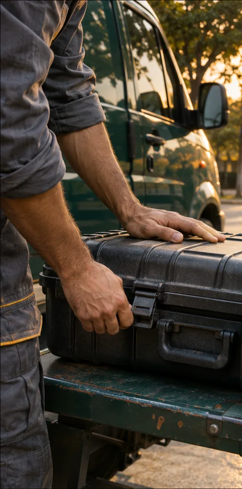

Feche a ordem com histórico
Confirme o que aconteceu na visita e gere um resumo que o atendimento pode levar para a próxima conversa.

Visitas da equipe
Selecione a ordem da visita.
Registro da visita
Resumo para atendimento
Voltar às ordens e aos saldos iniciais?